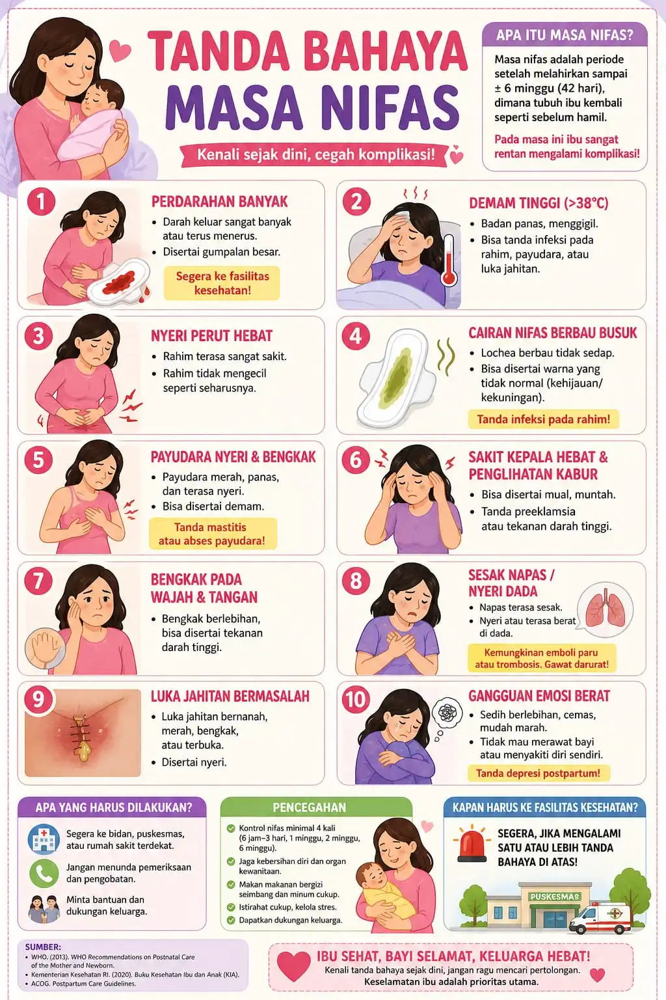

Tanda Bahaya
Kenali tanda-tanda yang memerlukan perhatian medis

⚠️ Segera ke Fasilitas Kesehatan
Klik untuk memperbesar
Segera cari bantuan medis!
Jika Anda mengalami salah satu tanda bahaya berikut, segera hubungi bidan atau pergi ke fasilitas kesehatan terdekat.
Perdarahan Banyak (Hemoragi)
🩸
Kapan harus ke dokter?
- Perdarahan lebih banyak dari haid biasa
- Menggelembung (gumpalan) darah besar
- Perdarahan tidak berhenti atau semakin banyak
- Tiba-tiba terasa pusing, lemas, atau jantung berdebar
Penyebab Umum
Atonia Uteri
Rahim tidak berkontraksi dengan baik
Sisa Plasenta
Plasenta tidak keluar sepenuhnya
Cedera Jalan Lahir
Robek atau laserasi
Gangguan Darah
Masalah pembekuan
Demam Tinggi Pasca Persalinan
🌡️
Segera ke dokter jika:
- ! Suhu tubuh di atas 38°C (100.4°F)
- ! Demam disertai menggigil
- ! Nyeri perut hebat yang tidak membaik
- ! Cairan dari jalan lahir dengan bau tidak sedap
Kemungkinan Penyebab
🏥
Infeksi Pasca Persalinan
Infeksi pada rahim, luka jahitan, atau saluran kemih
🤱
Mastitis
Infeksi pada payudara
💉
Tromboflebitis
Infeksi pada vena
Nyeri Perut Hebat
💥
Segera ke dokter jika:
- Nyeri perut hebat yang tidak membaik dengan obat
- Nyeri disertai demam tinggi
- Perut terasa keras dan kaku
- Mual dan muntah terus-menerus
Kemungkinan Penyebab
- 🔴 Infeksi pada rahim (endometritis)
- 🟤 Sisa plasenta yang tidak keluar
- 🩹 Robeknya luka jahitan perineum
- 🫃 Masalah pencernaan
Payudara Bengkak (Mastitis)
🤱
Segera ke dokter jika:
- ! Payudara merah, panas, dan bengkak parah
- ! Nyeri yang sangat hebat saat menyusui
- ! Demam tinggi di atas 38.5°C
- ! Mengeluarkan nanah dari putting
Tips Pencegahan
🕐
Susui bayi sering-sering
👄
Pastikan pelekatan benar
🫙
Kosongkan payudara sepenuhnya
🔄
Ganti posisi menyusui
Depresi Postpartum
🧠
Depresi postpartum adalah kondisi kesehatan mental serius yang memengaruhi ibu setelah melahirkan. Jangan menganggap remeh kondisi ini.
Tanda-tanda yang perlu diwaspadai:
Rasa sedih berkepanjangan
Tidak ada hubungan dengan bayi
Kesulitan tidur
Nafsu makan berubah
Merasa tidak berdaya
Pikiran menyakiti diri sendiri
Yang Bisa Dilakukan
- 1 Ceritakan perasaan Anda kepada orang terdekat
- 2 Hubungi bidan atau konselor jika diperlukan
- 3 Jangan ragu meminta bantuan
- 4 Jaga pola makan, tidur, dan istirahat yang cukup
- ! Jika pikiran menyakiti diri muncul, segera cari bantuan profesional